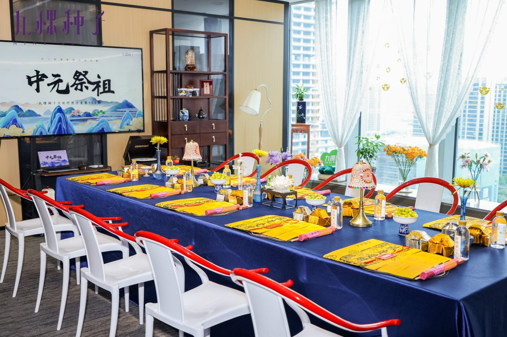
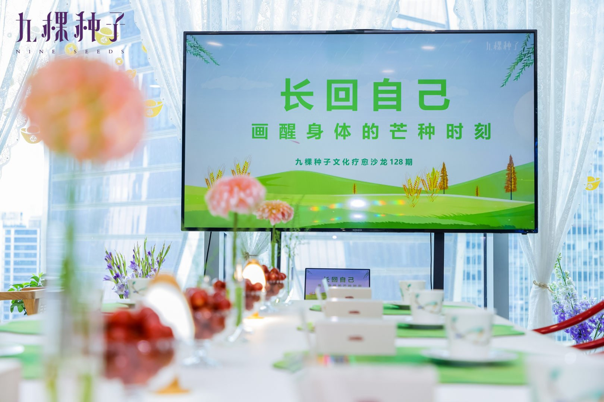
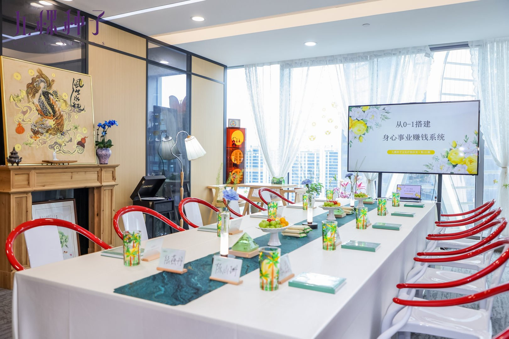
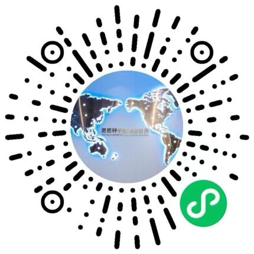

它讲什么：以纪念、感恩、家风、心安为主线，把"与祖辈的链接"做成一种可被体验的仪式，落在文化脉络与情感安顿里，不掺杂任何封建迷信色彩。
流程框架：签到入场 → 静心开场 → 家风分享 → 书写/寄思 → 集体仪式（如中元、清明节点）→ 收尾安顿。含 5 个固定节点主题与明确禁忌。
适合谁：想做有根、有文化厚度沙龙的主理人；已有传统文化或自我探索基础、希望做有深度关系的人群。
价值：更适合沉淀深度关系与持续复购，也是主理人"承载力"的体现。
体验价 599 元起不做虚的。九棵种子家文化沙龙的每一类沙龙，都能独立办、能复购、能长出自己的圈子。主理人可以从最顺手的一类切入，再慢慢扩展。
连接祖辈、安放来处。是九棵种子复购最强、承载力最深的一类沙龙。
它讲什么：以纪念、感恩、家风、心安为主线，把"与祖辈的链接"做成一种可被体验的仪式，落在文化脉络与情感安顿里，不掺杂任何封建迷信色彩。
流程框架：签到入场 → 静心开场 → 家风分享 → 书写/寄思 → 集体仪式（如中元、清明节点）→ 收尾安顿。含 5 个固定节点主题与明确禁忌。
适合谁：想做有根、有文化厚度沙龙的主理人；已有传统文化或自我探索基础、希望做有深度关系的人群。
价值：更适合沉淀深度关系与持续复购，也是主理人"承载力"的体现。
体验价 599 元起
在涂画里慢下来，被看见、被安顿。

它讲什么：以曼陀罗、树木画、21 天打卡等表达性工具，让参与者在涂画里慢下来、把注意力收回到自己身上。陆老师主导心力板块。
流程框架：暖场放松 → 主题引导 → 自由绘画（曼陀罗/树木画）→ 轻分享 → 收束安顿。基础引导规则与注意事项一并提供。
适合谁：想做温度感强、让人愿意松弛下来的主理人；希望用非语言方式帮人打开、连接的人群。
价值：低门槛、高共情，最容易被陌生人接受；是建立信任、承接后续关系的入口。
扫码查看当期排期与价格陪主理人把内容变成生意，从表达、信任到成交的完整闭环。
它讲什么：以"财富觉醒""关系经营""自我表达"等真实命题切入，陪参与者从表达自己开始，走到信任与行动。
流程详解（以财富觉醒为例）：签到入场 → 开场规则 → 正念安定 → 自我介绍 → 核心内容（状态检测/信念松动/新可能探索）→ 行动承诺 → 复盘闭环 → 合影结束。每个环节都有目的，不是走过场。
适合谁：想用沙龙获客、做个人 IP、把专业能力变现在场里发生的人。
价值：最直接关联商业结果；是主理人建立专业信任、完成第一笔成交的练兵场。
体验价 199 元起
三类沙龙都能单独报名。商业主题、节气绘画疗愈、祭祖文化，你挑一场感兴趣的，扫码进小程序看排期。

微信扫码，直接选场次报名